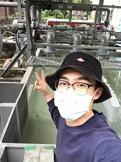

Tsz-Yi Lin (Safin)
🎓Postgraduate student at UNSW Sydeny
🌎Environmental Engineering
📧 tszyilin@gmail.com
📱 (+61)0466244088
Education
🏫University of New South Wales (Sydney, Australia)
Master | 09/2022-present
- ✅Environmental Engineering
🏫National Taiwan University (Taipei, Taiwan)
Master | 09/2019-07/2021
- ✅Bioenvironment Systems Engineering
- ✅Environmental Biotechnology Lab
C. elegans (Model Organism)
Alzheimer's disease
Nano-Silver
🏫National Taiwan University (Taipei, Taiwan)
Bachelor | 09/2019-07/2021
- ✅Bioenvironment Systems Engineering
- ✅Environmental Biotechnology Lab
Sediment Pollution
Climate Change
Nano-Zinc
Work History
🚧 Urban Pizza (Sydney, Australia)
Team Member | 10/2022-present
- ✅Pizza Delivery
- ✅Dough Making
- ✅Ingredient Preparing
🚧 Hydrotech Research Institue of National Taiwan University
Research Assistant | 01/2022-08/2022
- ✅Xingzhuang waste water pumping station hydraulic physical model
- ✅Wushe reservoir hydraulic physical model
- ✅Zengwen reservoir guiding channel hydraulic physical model
🚧The National Taiwan University University Language Cneter
Teaching Assistant | 01/2022-08/2022
Course: Advanced English Class
- ✅Create English learning material
- ✅Provide English speaking practice for student
Special Experience
💼Student Association of Bioenvironmental Systems Engineering
Chairman | 09/2017-07/2018
- ✅Attending department administrative meeting
- ✅Planning department activities
🚲Cycling Club of National Taiwan University
Treasurer | 09/2016-08/2017
- ✅Bookkeeping for the club
- ✅Searching sponsership from school and company
🏸Badminton Club of Bioenvironmental Systems Engineering
Team Leader | 09/2017-08/2018
- ✅Arranging training program
- ✅Leading team to participate competition